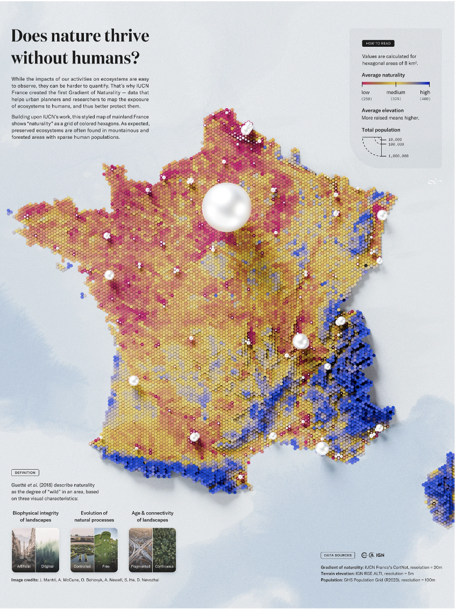
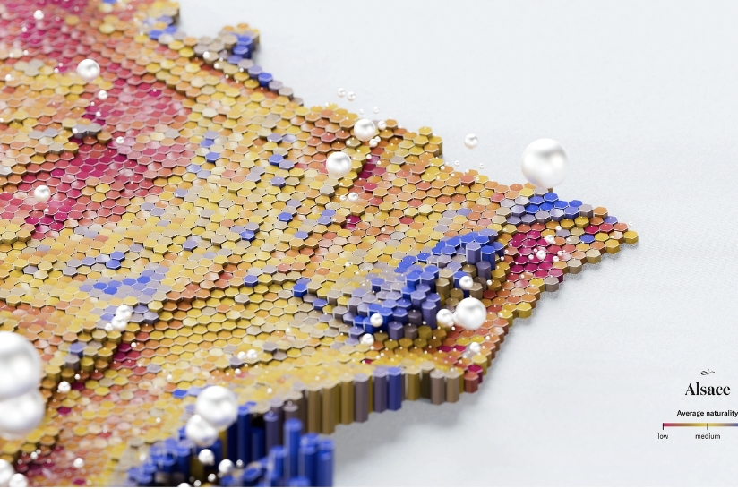
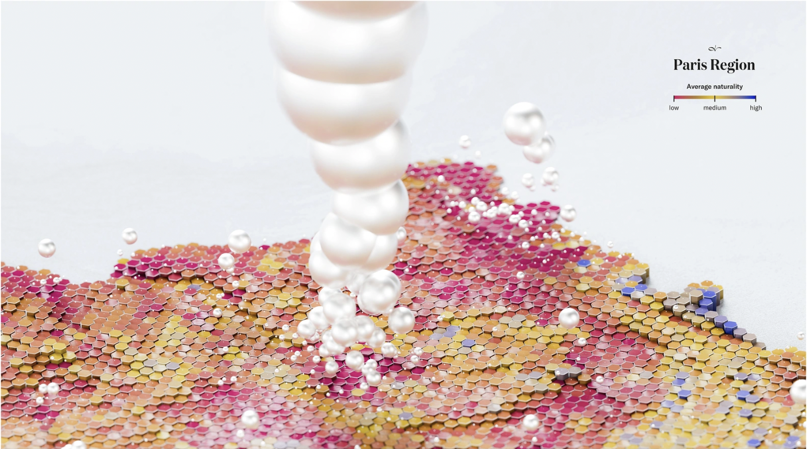

Lab Requirements
For Lab 3, we were required to find a data visualization and write a 500+ word critique analyzing its effectiveness. We evaluated the visualization based on principles of good design, including clarity, accuracy, context, and visual appeal. The critique required embedding the original visualization as an image and linking to the source.
📄 The full written critique for this lab is presented on this page below.
Visualization



Source: Florent Lavergne
Critique
When first looking at this artwork, I was drawn to the beauty of the colors and the different shapes. The artwork appears to have scales and large pearls. I was drawn to the artwork, but struggled to understand what it represented before I read the article. The artist who developed this in collaboration with IUCN France stated, “The data behind the map comes from a careful combination of sources: ecological statistics, population density, and terrain elevation. Using GIS software, these layers were combined into a grid of 8 km² hexagons, each analyzed to reflect average naturality and other environmental factors.” The idea of the project wasn't about being a map, but it was to bring awareness to the subject. The data represents a measure of how much ecosystems are exposed to human presence. The creator wanted the hexagons to tell a story of “balance, tension, and survival.”
What is gained when looking at this piece of art is that it is very beautiful, and because of that, I was drawn in. If it wasn’t as visually pleasing, I wouldn’t have read the article. I think that was the goal. Although the artwork is pretty, it might also be missing the point. I am struggling to understand how the art relates back to ecosystems being exposed to human presence. Some of the images created represent the topic better than others. I think that the aesthetic approach is a little too strong. In one of the photos, there are pearls all over the map, but they don’t represent anything. They are more distracting when trying to understand the map of average naturality.
This artwork does not use emotion to deepen the understanding. It mostly focuses on the metaphor and meaning of the items on the map. The colored hexagons represent values such as elevation. When the hexagons are higher, it means there's a higher elevation. I think that a diverse audience could not understand this image. If someone were visually impaired and unable to see the artwork, the image's beauty would not be understood. Even if they described what the chart was doing, part of art is being able to feel the image. I would not have clicked on the article if the image's beauty hadn't caught my eye. I think it is also overly abstract and couldbe confusing for all age groups. Even though I don’t think this specific artwork is for everyone, I think there are many other plain charts that could explain the topic. Maybe the artist did not intend for everyone to understand.
Context is provided to explain what data is shown and why it matters, but not for every image. One of the images, it shows a paragraph answering the question, “Does nature thrive without humans?” In the other images, there is just the graph and a tiny scale in the bottom corner.
What I Learned & Skills Demonstrated
- I was drawn to the beauty of the colors, but struggled to understand what it represented at first.
- The aesthetic approach can be strong enough to draw people in, but it can also distract from the point.
- Just because something is visually pleasing doesn't mean it clearly communicates the data.
- Context matters. Without explanation, a visualization can be confusing or overly abstract for a diverse audience.
Skills Used
- Critical Analysis
- Data Interpretation
- Visual Literacy
- Ethical Evaluation of Media
- Academic Writing
- VS Code
- GitHub
- HTML & CSS